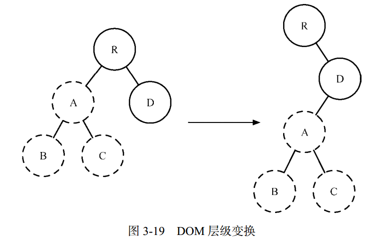
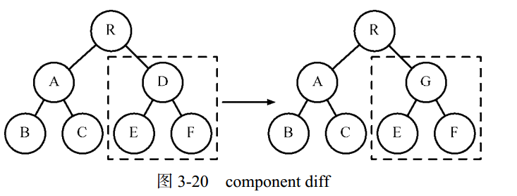

diff算法
虚拟DOM树的两个假设：
- 组件的DOM结构是相对稳定的（跨层级DOM移动不经常发生，因为这个最慢）
- 类型相同的兄弟节点可以被唯一标识
如何计算Virtual Dom中真正变化的部分，这就需要diff算法。
Virtual Dom配合高效的diff算法，才能够快速的渲染改动的页面，而不会渲染整个页面。
1. 跨层级移动
策略：针对节点进行比较。不同层级的节点，只有创建和删除操作。
影响性能操作，建议不要进行DOM 节点跨层级的操作。
图示如下（create A →create B →create C →delete A）：

2. 同层级父节点移动
策略：
- 同类型组件：通过
shouldComponentUpdate()来判断该组件是否需要进行diff 算法分析（所以可以利用shouldComponentUpdate()来优化组件性能） - 不同类型组件：直接判断为dirty component，从而替换整个组件下的所有子节点
图示如下： 
3. 同层级子节点移动
策略：对于同一层级的一组子节点，它们可以通过唯一 id 进行区分（这就是为什么在批量创建同类型组件时需要添加key属性，并且建议将key定义为有意义的唯一标示，而不是index索引）。
其提供三种操作方法：
- INSERT_MARKUP：新的组件类型不在旧集合里，即全新的节点，需要对新节点执行插入操作
- MOVE_EXISTING：旧集合中有新组件类型，且element 是可更新的类型generateComponentChildren 已调用 receiveComponent，这种情况下 prevChild=nextChild，就需要做移动操作，可以复用以前的DOM 节点。
- REMOVE_NODE：旧组件类型，在新集合里也有，但对应的element 不同则不能直接复用和更新，需要执行删除操作，或者旧组件不在新集合里的，也需要执行删除操作。